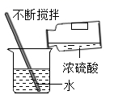
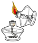
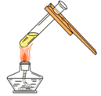

2020年北京市中考化学试题 · 选择题 第1、2、3、4、5题 · 对应解析
1. 为预防骨质疏松，应给人体补充的元素是
A. 钙B. 铁C. 锌D. 碘
【答案】A
【解析】
【详解】A、骨质疏松是由骨组织中钙盐流失引起的骨病，缺钙就容易发生骨质疏松，因此补钙可以预防骨质疏松，选项A正确；
B、人体缺铁会得缺铁性贫血，与骨质疏松无关，选项B不正确；
C、缺锌会影响人体发育，与骨质疏松无关，选项C不正确；
D、人体缺碘会引起甲状腺肿大，幼儿缺碘会影响生长发育，与骨质疏松无关，选项D不正确。故选A。
2.下列气体中，能供给动植物呼吸的是
A. O2B. H2C. N2D. CO2
【答案】A
【解析】
【详解】A、氧气的用途是支持燃烧和供给呼吸，故A正确；
B、氢气不能供给呼吸，故B错误；
C、氮气化学性质稳定，也不能供给呼吸，故C错误；
D、二氧化碳既不能燃烧也不能支持燃烧，还不能供给呼吸，故D错误。故选A。
3.下列含金属元素的物质是
A. H2SB. P2O5C. AgNO3D. H2O
【答案】C
【解析】
【详解】A、H2S中氢元素、硫元素均为非金属元素，不符合题意；
B、P2O5中磷元素、氧元素均为非金属元素，不符合题意；
C、AgNO3中银元素为金属元素，符合题意；
D、H2O中氢元素、氧元素均为非金属元素，不符合题意；
故选：C
4.下列不属于铁丝在氧气中燃烧现象的是
A. 放出热量B. 产生大量白烟
C. 火星四射D. 生成黑色固体
【答案】B
【解析】
【详解】铁丝在氧气中燃烧，火星四射，放出热量，生成黑色固体；不会产生大量白烟。
故选：B。
5.下列操作不正确的是
A. 稀释浓硫酸

B. 点燃酒精灯
C. 加热液体

D. 取用固体粉末【答案】B
【解析】
【详解】A、浓硫酸稀释时，常将浓硫酸沿器壁慢慢注入水中，并不断搅拌，使稀释产生的热量及时散出，图示正确，不符合题意。
B、用燃着的酒精灯去点燃另一个酒精灯存在安全隐患，酒精灯的酒精容易溢出，造成火灾等不可控的后果，图示错误，符合题意。
C、给试管中的液体加热时，使用注意事项：1、用试管夹或铁架台上的铁夹夹持试管时，应夹在离试管口处，以便于加热或观察。试管内盛放的液体，不加热时不超过试管的，以便振荡，加热时不超过试管的，防止液体冲出。给液体加热时应将试管倾斜成45°以扩大受热面；给固体加热时，管口略下倾斜，防止冷凝水回流而使试管炸裂，图示正确，不符合题意。
D、取用粉末状药品，试管横放，用药匙或纸槽把药品送到试管底部，图示正确，不符合题意。
故选B。